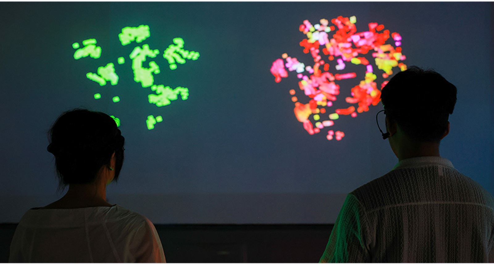
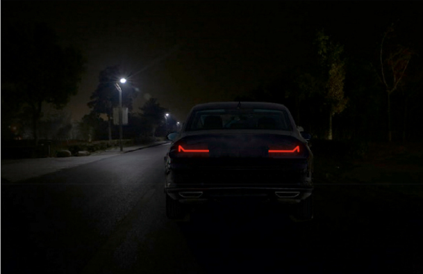
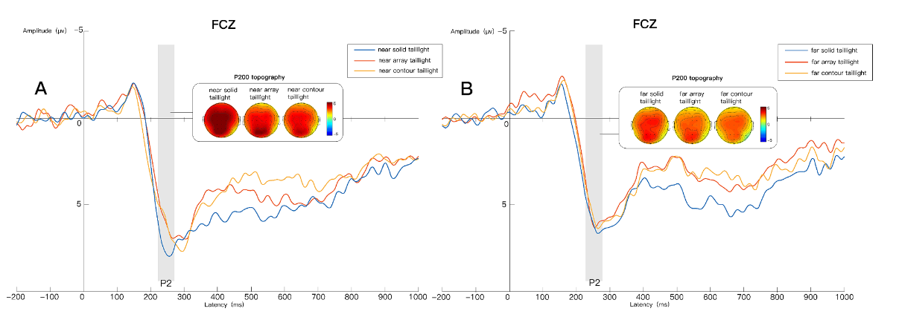

Proceedings of the 2026 CHI Conference on Human Factors in Computing Systems (CHI ’26), 2026
I am interested in Ergonomics, Human-Computer Interaction (HCI), Psychology, and Industrial Design.
I am skilled in conducting strictly controlled laboratory experiments using physiological instruments and analyzing behavioral and physiological data.
I am currently affiliated with the FSV Lab at SUSTech. I hold a Bachelor of Engineering in Industrial Design and a Master of Arts in Design Studies.


